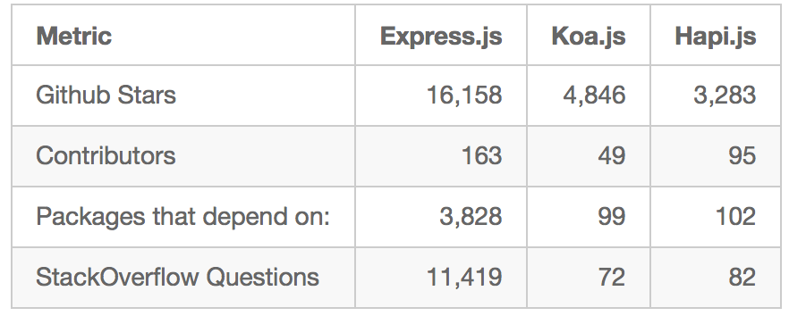

About me
- Carlos Justiniano, HC.JS founder and a long-time programmer
- A fullstack developer using NodeJS since 2011
- Developed Node applications in production use
- Developer at MediaMath, note: we're hiring!
Node = NodeJS
This is part two
- Part one is here: http://cjus.github.io/nodejs-presentation
Quick recap
- Node is an application which contains a JavaScript execution engine
- Specifically, that engine is Google's Chrome V8 engine
- However, Node is also much more
Node as a JS execution engine
- Start node at the terminal
- Node then enters a mode called a REPL (Read Eval Print Loop)
- Type JS and watch it execute
- Tip: Press the TAB key to view a list of internal commands
- Press CTRL-C twice to exit
Node as a tool to build command line programs
- Code sample here: https://github.com/cjus/nodejs-presentation-advanced/tree/master/NodeJSProjects/commandline
Node as a web server
- Code sample here: https://github.com/cjus/nodejs-presentation-advanced/tree/master/NodeJSProjects/web/login
Node as an API server
Node web frameworks
- The last demo used a web framework, an add-on which consists of code that simplifies the creation of web
applications
- There are lots of frameworks to choose from: ExpressJS, HapiJS, Koa and KrakenJS to name a few.
- These frameworks differ in how they're configured, create servers, handle routing and middleware
Framework popularity
The following data is from an article entitled
"Node.js Framework Comparison: Express vs. Koa vs. Hapi"
https://www.airpair.com/node.js/posts/nodejs-framework-comparison-express-koa-hapi
Framework popularity

Available books
Framework age

Code review of a Node / Express app
NPM - The Node Package Manager
NVM - The Node Version Manager
Uses of Node

Uses of Node
Node and Robotics
Checkout CylonJS and NodeBots!
Using Node with ES6
Node internals

Node Add-ons: Extending Node, using C++
Contact
- cjus on Twitter and Github
- Email: cjus34@gmail.com
- About: http://cjus.me